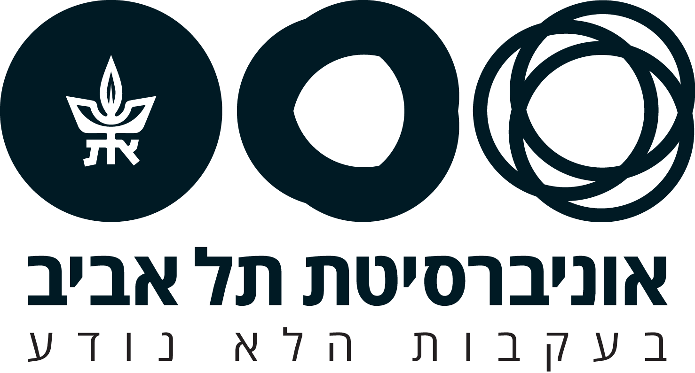

הערכה Bayesian של פרמטר ברנולי
פרופ’ ניצן שחר
NASA · Apollo 17 · 7.12.1972
הגדרת המודל:
\[ \begin{aligned} y &\sim \text{Bernoulli}(\theta) && \text{likelihood} \\ \theta &\sim \text{Uniform}(0,\ 1) && \text{prior} \end{aligned} \]
איור 1. (א) ההתפלגות הפוסטריורית של θ, חלק פני כדור הארץ המכוסה מים, אחרי 20 זריקות ועם prior אחיד. האזור הכהה: 95% HDI; הקו: השכיח. (ב) תוצאות הזריקות.
תוצאות. מתוך זריקות, נחתו על ים. עם prior אחיד, הערך הסביר ביותר של חלק המים היה (שכיח), עם 95% HDI בין ל-. ההסתברות שרוב פני כדור הארץ מכוסים מים (θ > 0.5) היא .
כל ערך של \(p\) סביר באותה מידה. ה-prior של Bayes ו-Laplace, “כשלא יודעים כלום”.
רחב, אבל מוריד משקל מערכים קיצוניים. “כנראה לא כל העולם ים, ולא כל העולם יבשה.”
מבוסס על ידע קודם, למשל מחקרים קודמים או מפה. צר, ומשפיע הרבה כשיש מעט נתונים.
ה-posterior תמיד נופל בין ה-prior ל-likelihood, וקרוב יותר למי שצר יותר.
משקל 0 = prior שטוח, וה-posterior זהה ל-likelihood. ככל שה-prior כבד יותר, הוא מושך את ה-posterior אליו. ככל שיש יותר זריקות, ה-likelihood מושך חזרה.
| ממוצע | 89% PI | |
|---|---|---|
| מהעקומה (מדויק) | ||
| מהדגימות |
“No guarantees except logical. Probability theory is a method of logically deducing implications of data under assumptions that you must choose.”
— Richard McElreath
ה-posterior תמיד נופל בין ה-prior ל-likelihood, וקרוב יותר למי שצר יותר.
prior צר: אמונה חזקה מראש. likelihood צר: הרבה נתונים. הקווים המקווקווים מסמנים את המרכז של כל עקומה.